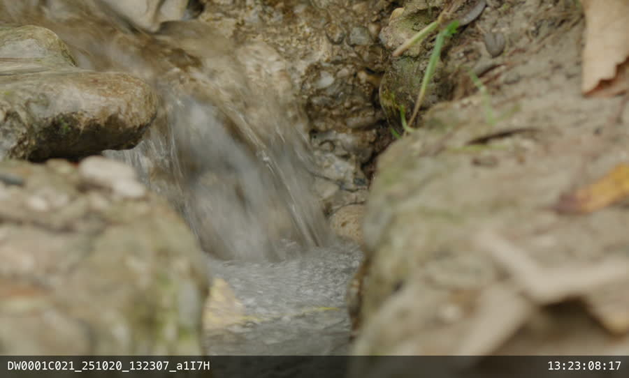
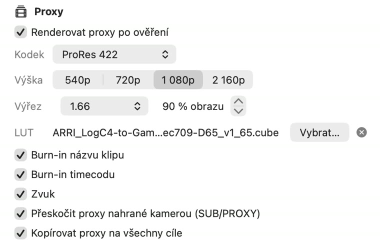

✓Every card copied 1:1 to two drives at once; every file read back from both drives and checked before the card is released. ARRIRAW MXF is recognised automatically.
1.66 frame guides, 10% overscan
✓Proxies are cropped to the 1.66 frame at 90% of the image. The crop happens on the sensor image, before debayering, so the frame keeps full detail.
G733 nostalgic textures for all scenes K445 standard texture for VFX shots
✓Textures are set in camera and are part of the recorded image. Offload copies the footage untouched and the proxies show the texture of each shot – no per-scene setup.
Rec 709 LUT for monitoring
✓The same Rec 709 LUT is applied to proxies and report thumbnails: ARRI LogC4 → Rec 709 by default, or the show LUT as a .cube file.
Proxies: ProRes 422, Rec 709 LUT, 1.66 frame at 90%
✓ProRes 422, 1794 × 1080 (1.66), source timecode track for relinking in the edit, clip name and timecode burn-in on request.

Full image with the 1.66 frame at 90% marked. The shaded area is the overscan.The proxy · ProRes 422, 1794 × 1080, ARRI LogC4 → Rec 709, clip name and source timecode burned in.
Frames from an ARRI ALEXA 35 sample clip, processed by Offload.
On set
Set up once, then one button per card

Proxy settings for this show: ProRes 422, 1080, frame 1.66 at 90%, Rec 709 LUT. Saved, so the loader only inserts cards. (UI shown in Czech.)
Two drives, one read. The card is read once and written to both drives in parallel. The second copy adds no time.
Card back to camera first. As soon as both copies are verified, the card can be ejected. Proxies keep rendering from the drives while the next card copies.
Nothing is written to the card. A card offloaded twice lands in a new folder; nothing is ever overwritten.
Errors are loud. A failed file is shown in red in the app and in the report, and the card is never marked as safe.
Copying. Live speed of the card and each drive (D1, D2), time remaining, current clip.Verified – card can go back. The green line appears only when every file is on both drives and has been read back and matched.
Rule for the loader: reformat a card only after Offload shows the green “all files on 2 drives and verified”. A finished copy alone is not enough.
After wrap
The card report
Saved with the footage on both drives; opens in any browser, ready for the production office, editorial and the lab. Per clip: thumbnail in Rec 709, resolution, frame rate, duration, start timecode, audio and proxy status. An ASC MHL record next to the footage lets anyone re-check the copies later with Silverstack, ShotPut or ascmhl.
Report of an ALEXA card – verification status, copy and verify speed, both drives, clips.
On the drives
DRIVE/
└─ 2026-10-03/ shoot day (offload date)
└─ A001/ card / reel name from the camera
├─ A001C001_….mxf ARRIRAW, exactly as on the card
├─ _PROXY/ ProRes 422 · 1.66 · Rec 709
├─ _REPORT/ card report
└─ ascmhl/ ASC MHL hash record
Tested with ARRI ALEXA 35 and ALEXA Mini ARRIRAW sample footage. Proxy render time for Open Gate 4.6K will be confirmed on the first real card. Other cameras on the show (Blackmagic RAW, ProRes, XAVC and others) go through the same workflow.